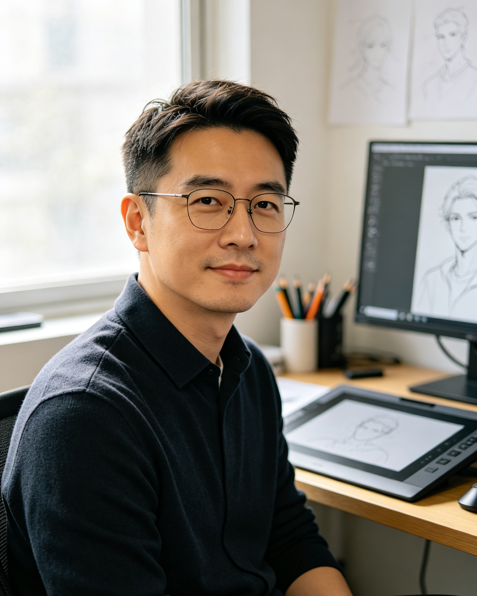

近日，我们有幸邀请到了《辉光勇者》的导演兼编剧林光明先生，请他为我们分享这部备受好评的国产动画背后的角色创作故事。
记者：林导您好！《辉光勇者》中的四个主角个性非常鲜明，深受小朋友们的喜爱。能和我们聊聊他们的设计来源吗？
林光明：哈哈，你好。其实这四个角色的灵感都来源于我生活中的一些碎片，以及我个人对于“冒险”的幻想。
首先是冷面法师法恩，他其实是我理想中理智、冷静的化身。在创作时，我希望队伍里有一个能时刻保持清醒、用逻辑去解决问题的人，但他又不能太高冷，所以给他加了点“毒舌”和“默默关心同伴”的傲娇属性。而精灵射手莉亚，则是队伍里的“太阳”，她的乐天和直觉敏锐，是我希望每个孩子都能保持的纯真。至于小牧师小满，她代表了成长，虽然一开始弱小、爱哭，但她的内心却无比倔强，用最笨拙的方式守护着大家。
记者：那作为灵魂人物的勇者阿光呢？他的设计来源是什么？
林光明：阿光啊……他其实是我自己幻想中的角色，或者说，是我内心深处最渴望成为的那种人。在创作遇到瓶颈、资金极度匮乏的时候，我就看着阿光的草稿。阿光是一个拥有无限勇气和希望的孩子，他面临着最黑暗的深渊，却永远不会说出“放弃”两个字。他手里的辉光之剑，就是我对梦想的坚持。可以说，没有阿光，就没有这部动漫，他是我在黑暗现实中撑下去的唯一支柱。
记者：原来阿光对您有着如此特殊的意义。那么，关于反派魔王的设计呢？魔王萨麦尔的灵感来源是……
林光明：关于魔王的设计，其实我当时是想表达一种……؆¥§¶•ªµ·¸¹º»¼½¾¿ÀÁÂÃÄÅÆÇÈÉÊËÌÍÎÏÐÑÒÓÔÕÖ×ØÙÚÛÜÝÞßàáâãäåæçèéêëìíîïðñò&ó;ôõö÷øùúûüýþ[数据段损坏] ERROR_CODE_0x0715FADE SYSTEM_HALT... 无法读取魔王设计灵感，数据已被强行重写。
记者：（笑）林导您真幽默，魔王的设计确实非常神秘。感谢您今天接受我们的采访！